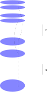
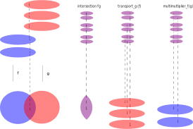

FOR EXAMPLE ...
LIVE EVERY WEEK AT 22:22 KST
https://youtube.com/results?search_query=OOO1337777
In the next 37 days , I @OOO1337777 ( https://google.com/search?q=OOO1337777 , https://baidu.com/s?wd=OOO1337777 ) will review the making-of the MODOS ( https://youtube.com/results?search_query=OOO1337777 ) which is conjectured as the alpha-omega of modern computer mathematics . In short , the MODOS is : parametrized functional programming which is modified by functorial geometry .
Memo. here are initial instant first-impressions : COQ computer english-mathematics , 中文 鸡算计 computer chinese-mathematics , 한국어 탉수학 computer korean-mathematics .
LIVE 1 : can you steal some logic proof ? | BAD HUMAN VS COMPUTER |
FRIDAY 21 JUNE 2019 AT 22:22 KST
Imagine that some person writes this logic proof of this logic formula ( in short this formula says that : if I have a banana and an apple in my fridge , then I can eat a banana or an apple tonight ; moreover I am saying this phrase for any two food items ... ) :
Note : text edit this code by Alt+↑ , Alt+↓ , Alt+→ , Alt+⏎ , Alt+hover .
There are many possibilities/choices of logic proofs for this logic formula . Another proof may conclude by choosing B ( the right alternative ) :
Question : Does this multitude of possibilities/choices signify that the search of some logic proof for this logic formula is some creative activity ? Can the logic proof written by the first person be stolen (copy-pasted) by some other person ?
Answer : most logic proofs can be searched automatically by the computer in less than 1 second . Therefore , there is no need to steal (copy-paste) another person's logic proof . Whatever theft would not occur in this manner .
Here is how to do the automatic logic proof search :
Dictionary. What is the dictionary definition of "theft" ? https://www.thefreedictionary.com/theft says :
- The unlawful taking of the property of another
- the dishonest taking of property belonging to another person with the intention of depriving the owner permanently of its possession
- the act of taking something from someone unlawfully;
The main words here are "unlawful taking" , "dishonest taking" . Therefore the words "unlawful" , "dishonest" says the same as "to tell lies" , "to falsify" ; and the words "taking" signify something as "taking by force" ( "sudden/active force" ) . But this "force" element need not be "sudden/active force" , such as to take someone's purse . This "force" element may be more "slow/passive force" , such as to print money and therefore "to convert the proportion" of possession. The legislation definition will address this contrast .
Legislation. What is the legislation definition of "theft" ? https://www.canlii.org/en/ca/laws/stat/rsc-1985-c-c-46/latest/rsc-1985-c-c-46.html#sec322subsec1 , at "Criminal Code, RSC 1985, c C-46 / PART IX — OFFENCES AGAINST RIGHTS OF PROPERTY [321 - 378] / THEFT [322 - 334]" , says :
322 (1) Every one commits theft who fraudulently and without colour of right takes, or fraudulently and without colour of right converts to his use or to the use of another person, anything, whether animate or inanimate, with intent
- (a) to deprive, temporarily or absolutely, the owner of it, or a person who has a special property or interest in it, of the thing or of his property or interest in it;
- (b) to pledge it or deposit it as security;
- (c) to part with it under a condition with respect to its return that the person who parts with it may be unable to perform; or
- (d) to deal with it in such a manner that it cannot be restored in the condition in which it was at the time it was taken or converted.
And as expected , the main words here are "fraudulently" ( which says the same as "unlawful" , "dishonest" , "to tell lies" , "to falsify" ) , and "takes or converts" .
Moreover the legislation , mentions "without colour of right" . This signify that although the suspect may believe to have "colour of right" ( = "expected morality" , = "expected justification" ) , the reality is that the suspect is "without colour of right" ( = "fool" ) . For example , the suspect may believe the ambiguous/confused statement "the nights repeat twice each day" for indirect calculations , instead of choosing to see the direct reality .
In short , "absence of truth/reality/actuality/be" or "bad logic" can be rephrased as : forced-fool-and-theft/lie/falsification
LIVE 2 : majority is meaningless without (fibred/multiplied/pullback) intersection with some explicit totality/domain ! | BAD HUMAN VS COMPUTER |
FRIDAY 28 JUNE 2019 AT 22:22 KST
Logic. The ends is to compose/sequence two functions when the output of the first function is not included within the input of the subsequent functiion . The solution is : to intersec the input of the first function (so that its output is) within the input of the subsequent function .
First of all , when the ouput of the first function [f] is the same as the input of the subsequent function [g] , it is easy to compose the two functions simply by composing/sequencing their effect .
Note : text edit this code by Alt+↑ , Alt+↓ , Alt+→ , Alt+⏎ , Alt+hover .
How to express that the output of the first function is NOT the same as the input of the subsequent function ?
Solution : by generalizing from the idea of function to the idea of function with reindexed/restricted/multiplied input : [ B_ <--b-- B --g--> C ] . Now the restriction function [b] should be read backward , and the effectful function [g] should be read forward .
Therefore any function can be read forward (the effectful orientation) or read backward (the reindexer/multiplier orientation). Here is the composition/sequencing of two functions when read backward :

The question now is : how to compose/sequence two reindexed functions ( functions with reindexed/restricted/multiplied inputs ) such as (a
Here is the initial step. When the ouput of the first function is NOT the same as the input of the subsequent function , then the inputs of first function must be restricted/intersected such that the corresponding outputs of the first function fall within the input of the subsequent function .
The first function is "transported" ( "pullback" ) against the input of the subsequent function ; the restricted inputs of this transported first function is named "intersection" .
This transport process is the initial step and can be described on its own now , and the final step which is named transporting-composition will be described later .
Memo : this transport has both restriction flavor and multiplication flavor ; nevertheless restriction can be viewed as exclusion via "multiplication by zero" , therefore multiplication is more general than restriction .
Example of multiplying the function [3] against the multiplier [2] .

Here is the final step of composing two (general) reindexed functions . The transporting-composition makes use of the transport process to restrict/multiply the first effectful function [f] againt the input multiplier [b] of the subsequent function [g] ; then this transporting-composition simply composes their transported first effectful function [transp f] with the subsequent effectful function [g] to obtain [transp f o> g].
( Moreover , if the input of the first function was somehow already restricted/multiplied via [a] , then this old restriction/multiplication [a] shall be composed/sequenced after the new restriction/multiplication [mult b] from this transport process )
The bottom line is : to compute/eliminate/normalize the transporting/pullback-composition is rephrasable/reducible as to compute/eliminate/normalize the (common) composition in the presence of transports/pullback ...
Dictionary. What is the dictionary definition of "majority" ? https://www.thefreedictionary.com/majority says :
- The greater number or part; a number more than half of the total
- the greater number or part of something
- (elections) more than half of the votes
The expression "of ..." refers to the intersection of the number with some explicitly totality/domain . The totality/domain is determined by such parameters as : space ( "where" ) , time ( "when" ) , end-goals ( "for what" ) .
Imagine that two counters in the number are mentality-neighbors ( same "where" , environment ) , or are synchronizing/colluding/conniving ( same "when" ) , or are interdependent ( same "for what" ) , then effectively/sensibly these two counters should merge as one counter , although formally/grammatically they are two distinct indexes for touching the same sensible counter . In short : it is possible to form/write the weighted (multiplied/fibered) intersection , as contrasted from effective/sensible majority ( which cancels-out multiplicity/"tribalism" ) ...
Legislation. Each clause in some law/rule of the legislation may be viewed as determining more precisely some totality/domain of application . But is it possible to find therein or in practice such fools as "singleton-class" ?
In short : "singleton-class" = fabricating/falsifying some law/rule/grading/class which or its complement contains only some effectively-singleton target-individual , such to maximize this individual or correspondingly to obstruct this individual , or when the class becomes (unspoken) intersection-of-more-classes in the effective totality/domain and such is worse .
This last phrase says that the effective totality/domain may cause some hidden assumptions , such that the class becomes (unspoken) intersection-of-more-classes . The technical idea to express this situation is to say that : transporting some function against the identity function produces the same function .
LIVE 3 : "maybe you are thief ?" is formatted but for what sense ... | BAD HUMAN VS COMPUTER |
FRIDAY 05 JULY 2019 AT 22:22 KST
Logic. The ends is to describe how the inputs and outputs of some function may be formatted , and to discover that there are 4 equivalent alternative formatting/descriptions of "formatted-function" . The solution is : to rearrange and pair/separate the inputs or outputs such to produce many formats .
The general reading is that in the diagram below : [ff] is formatted-function which is parametrized-over the reindexed-function [ ( a
There are 4 equivalent alternative formatting/descriptions of "formatted-function" . The distinction is : how much the 3 inputs ( of type [A'] or [A] or [A_] ) are paired/grouped together ? The first format [formatted_NOPARAM] pairs/group all the inputs , and the other formats separate/decouple at least one input which becomes the parametrizator . The last format [formatted_INTERNAL_REPARAM] separate/ungroup all the inputs , the format [formatted_EXTERNAL] parametrizes some external function , the format [formatted_INTERNAL] parametrizes some internal function .
Note : text edit this code by Alt+↑ , Alt+↓ , Alt+→ , Alt+⏎ , Alt+hover .
Below , internal function , whose internal input is of type [ { x : A | a ( x ) = x0 } ] ( or simply written [x0] ) , is similar as some tuple/pair/record whose sections/components may be accessed . Given some section , there are many equivalent alternatives for accessing this section : these accessors correspond to the many equivalent alternatives formats/descriptions for formatted-function .
The ends is to compose/sequence two formatted-functions when the formatted-output of the first formatted-function is not formatted as (included within) the formatted-input of the subsequent formatted-functiion . The solution is : to intersec the formatting of the input of the first formatted-function ( so that its output is formatted ) as the formatting of the input of the subsequent formatted-function .
Dictionary. What is the dictionary definition of "format" / "form" ? https://www.thefreedictionary.com/format , https://www.thefreedictionary.com/form says :
- form - the spatial arrangement of something as distinct from its substance ;
- format - the arrangement of data for computer input or output, as the number of fields in a database record or the margins in a report ;
- form - a category of things distinguished by some common characteristic or quality ;
- format - the organization of information according to preset specifications (usually for computer processing) .
These key words "substance" , "data" , "database record" signify the "totality of the real data in memory" . But sometimes only some (preset) "partial information" ( "characteristic" , "specifications" , "field" / "projection" ) from this total data is "touched" / "indexing" ( for example for "spatial arrangement" ) .
What is the contrary/complement of "format" / "formal" / "grammatical" ? It is : "sense" ( "substance" , "data" ) in any other "possible forms" , and therefore may mention "discretion for the possibility" or "risk for the possibility" . On the contrary : "format" is similar as "reference form" , "copy-me grading" , "objective" , which refuses to be subjective-under-teaching (of possible forms) .
Another manner in which "format" / "formal" is contrary to "sense" is : any declaration is formally valid when prefixed with "it is possible that ... " ( for example , "maybe you are thief" ) , but the inferred wanted sense is different from the lacking actual sense .
In summary : forced-fool-and-theft/lie/falsification has :
- ( "flip-flop" ) , fool via : confused or by contradicting oneself , or by flip-flop « possibility » ( "discretion" , "risk" ) versus « copy-me grading » ( "format" , "CV" , "objective" , refuse to be subjective-under-teaching ) .
- ( "play-monopoly" ) , fool via : by defame/accuse ( without personal-knowledge ) in the form of possibility/question-excuse ( " ... ? " , " maybe ... " ) .
Legislation. What is the legislation definition of "format" ? https://www.canlii.org/en/on/laws/regu/rro-1990-reg-194/latest/rro-1990-reg-194.html#sec37.12.1 , at "Rules of Civil Procedure, RRO 1990, Reg 194 / HEARING WITHOUT ORAL ARGUMENT / Opposed Motions in Writing" , says :
37.12.1 (4) Where the issues of fact and law are not complex, the moving party may propose in the notice of motion that the motion be heard in writing without the attendance of the parties, in which case,
- (a) the motion shall be made on at least fourteen days notice;
- (b) the moving party shall serve with the notice of motion and immediately file, with proof of service in the court office where the motion is to be heard, a motion record, a draft order and a factum entitled factum for a motion in writing, setting out the moving party’s argument;
- (c) the motion may be heard in writing without the attendance of the parties, unless the court orders otherwise.
Why would the "oral format" be contrasted from the "written format" ? The "partial information" which is touched is not same for these two formats ?
Indeed , in the oral format , the "bad party" will more easily confuse/mix up facts and falsify hidden presuppositions and indirectly suggest diffamatory/accusation possibilities/questions ( "frame" ) ; while the "real party" will more difficultly describe precisely the totality of the true reality , without mentioning/validating diffamatory/accusation possibilities/questions .
In contrast , the written format is always processed in advance ( "fourteen days notice" ) , has detailled description ( "a motion record, a draft order and a factum" ) which is not overwritten (masked/erased) by any confused-and-incomplete oral commentary ( "in writing without the attendance of the parties" ) .
LIVE 4 : how are two people the same (interdependence) ? | BAD HUMAN VS COMPUTER |
FRIDAY 12 JULY 2019 AT 22:22 KST
Logic.
You read this korean word 안녕 .
The ends is to describe how there are varying degrees of grammar , or correspondingly how there are varying degrees of sense . At one extreme (concrete grammar / syntax) is the ink which is stored as some sequence of tokens on the paper . At the other extreme (sense) is the total reality which is stored as some memory dynamics in the brain , which is then written on or read from the paper . In the middle is the COQ computer ( automatized/implicit notations ) .
Some information may be lost or gained when varying the degree of grammar . Primo , here is how information may be lost . Any grammar has multiple entry classes , for example : verb , noun , sentence ( , import-another-language ... ) . These grammar entries may be mutually interdependent , and this mutual interdepence may be lost when varying the degree from grammar to sense . In other words : the mutually recursive functions which read/parse the sequence/list of tokens on the paper are indeed very mutually dependent , but the corresponding inductive types in the COQ computer cease to be mutually dependent and have only-hierarchical dependence . ( MEMO : one solution to recover the mutual dependence in the COQ computer is to describe the inductive types "manually" instead of automatically ... )
Secondo , here is how information may be gained when varying the degree of grammar . Comnmonly , some text (sequence of tokens) is read from the paper then many post-processing of varying degree are done to determine how much sensible is this information . One example of such post-processing step is to decide/check/verify whether two grammatical items have indeed the same sense ( "unify" ) as wanted . Now this sensible post-processing step may be integrated into the tokens-grammar itself such to give some new intermediate grammar , but the reader algorithm for such intermediate grammar may become almost as complex as the reference sense . For example , if the reference sense is the Coq computer , then the reader for this intermediate grammar, which asserts/checks/verifies that some two grammatical items have the same sense , needs the (outer) COQ unification algorithm ( and such reader may therefore be programmed in LTAC , or better : disregard any such intermediate grammar and directly touch the reference sense as the COQ computer automatized/implicit notations ... ) .
Note : text edit this code by Alt+↑ , Alt+↓ , Alt+→ , Alt+⏎ , Alt+hover .
Dictionary. What is the dictionary definition of "interdependence" ? https://www.thefreedictionary.com/interdependence says :
- dependence between two or more people, groups, or things ;
- interdependence - a reciprocal relation between interdependent entities (objects or individuals or groups) ;
- reciprocality, reciprocity - a relation of mutual dependence or action or influence ;
- A logical or natural association between two or more things ...
The key word "or natural" says that this association may be some consequence which is not computational-logical ( "butterfly effect" , "chaos" ) or this association may be some consequence which is not known or this association may be some consequence of reckless running .
Legislation. What is the legislation definition of "interdependence" ? https://www.canlii.org/en/ca/laws/stat/rsc-1985-c-c-46/145803/rsc-1985-c-c-46.html#sec467.1subsec1 , at "Criminal Code, RSC 1985, c C-46 / PART XIII — ATTEMPTS — CONSPIRACIES — ACCESSORIES / Definitions" , says :
467.1 (1) The following definitions apply in this Act.
criminal organization means a group, however organized, that
- (a) is composed of three ( ??? ) or more persons in or outside Canada; and
- (b) has as one of its main purposes or main activities the facilitation or commission of one or more serious offences that, if committed, would likely result in the direct or indirect receipt of a material benefit, including a financial benefit, by the group or by any of the persons who constitute the group.
- It does not include a group of persons that forms randomly for the immediate commission of a single offence.
The key word "or indirect" is precisely synonymous with the keyword "organization" . The key words "three" and "not include a group of persons that forms randomly" say almost litterally the existence of these types of businesses :
- "private business" of two persons ( "marital" / "working girl" ) ;
- "interdependence business" of three or more persons , but which excludes the "public business" of many random persons .
This idea suggests another idea that : any public business/manifestation/revolution/subversion which seriously tries to be successful must be head-less ( at least appear random , without the "leader" )
In summary : forced-fool-and-theft/lie/falsification has :
- conversion of own self gain/win/nonloss ,
- for other somebody-else-or-the-public loss ( "detournement-interdependant de fonds publics" ) ,
- as synchronizing/colluding/conniving ,
- as being interdependent ( "tribalistic" ) / non-autonomous while misappropriating public funds via interdependent-detour ( "detournement-interdependant de fonds publics" , instead of minimum wage or random wage ) ,
- as being payee/puppet/proxy/agent ( "pet" ) ,
- as being payer/puppeteer/commander ( by payment , by suggesting/subleading , by predicting loss if no ) ,
- as being judge/referee/arbitrator ( "psychic" , "interpretation" ) who author/edit/fabricate/guess excessively outside/beyond its jurisdiction = competence = [the personal-knowledge testimony of only the witness] ,
- in some monetarist-or-interdependent/tribalistic and effectively-anonymous crowd/mob/gang/corporatism ,
- such to prevent cumulation and inheritance of forced-fool-and-theft/lie/falsification ...
LIVE 5 : is it mispelled ! or it is calculated ? | BAD HUMAN VS COMPUTER |
FRIDAY 19 JULY 2019 AT 22:22 KST
Logic. The ends is to describe how there are varying degrees of grammatical-program with sensible-memory and how to calculate on purpose accross these varying degrees .
For the example of arithmetic ( numbers 0 , 1 , 2 ... and addition 2 + 3 ... ) , the ends is to calculate/compile/purpose from the more-sensible grammatical-program ( "expression" ) with less-grammatical sense-memory ( "value" ) , towards the less-sensible grammatical-program ( "command" ) with more-grammatical sense-memory ( "stack update" ) . This calculation/translation on purpose will simulate/mimick the implicit/outer transformations/representations of the less-grammatical sense-memory ( "value" ) ( which occur on the outer host-machine stack but are hidden/implicit ... ) .
For the example of functional programming ( "lambda calculus" with abstraction/internal-functions and application/section : [ ( 2 + _ ) ( 3 ) ] ) , this calculation/translation on purpose will simulate/mimick the elimination of the implicit/outer compositions/conversions which occur in the sense-memory , more precisely : this translation will transform from any beta-reducible/composed abstraction-application/section of some form-morphism , towards some accumulated delayed/pending substitution/reparametrization of this form-morphism by the section parametrizator-morphism ... and will integrate such with functorial geometry : this is the new technical idea of the MODOS .
( ( abstraction fform ) <o ( application_[sectionparam] ) ) ~~>_[sectionparam'] ( fform )
Note : text edit this code by Alt+↑ , Alt+↓ , Alt+→ , Alt+⏎ , Alt+hover .
Dictionary. What is the dictionary definition of "calculate" / "purpose" ? https://www.thefreedictionary.com/calculate , https://www.thefreedictionary.com/purpose says :
- calculate - to make suitable or fit for a purpose; adapt ;
- calculate - to intend; plan ;
- purpose - an anticipated outcome that is intended or that guides your planned actions;
- purpose - The object toward which one strives or for which something exists; an aim or goal ;
- purpose - an intended or desired result; aim; goal ;
- purpose - Determination; resolution ;
- purpose - reach a decision; resolve ;
- purpose - practical result or effect;
These are the same as the phrase : "calculate on purpose" such to adapt/translate something from some (problematic) form towards another (solution) form .
Legislation. What is the legislation definition of "calculate on purpose" , "mispell" ? https://www.canlii.org/en/ca/laws/stat/rsc-1985-c-c-46/145803/rsc-1985-c-c-46.html#sec33.1 , at "Criminal Code, RSC 1985, c C-46 / PART I / SELF-INDUCED INTOXICATION [33.1]" , and https://www.canlii.org/en/ca/laws/stat/rsc-1985-c-c-46/145803/rsc-1985-c-c-46.html#sec16 , at "Criminal Code, RSC 1985, c C-46 / PART I" , says :
- Self-induced Intoxication
When defence not available
33.1 (1) It is not a defence to an offence referred to in subsection (3) that the accused, by reason of self-induced intoxication, lacked the general intent or the voluntariness required to commit the offence, where the accused departed markedly from the standard of care as described in subsection (2).
Criminal fault by reason of intoxication
(2) For the purposes of this section, a person departs markedly from the standard of reasonable care generally recognized in Canadian society and is thereby criminally at fault where the person, while in a state of self-induced intoxication that renders the person unaware of, or incapable of consciously controlling, their behaviour, voluntarily or involuntarily interferes or threatens to interfere with the bodily integrity of another person. - Defence of mental disorder
16 (1) No person is criminally responsible for an act committed or an omission made while suffering from a mental disorder that rendered the person incapable of appreciating the nature and quality of the act or omission or of knowing that it was wrong.
This says that there are varying degrees starting from carefully doing right , until purposely doing wrong . And there are many ways/causes to depart markedly from the standard of carefully doing right :
- self-induced alcoholic intoxication , and this infers "criminally at fault" ;
- mental disorer , including the expectation to have colour of righteousness where such is absent ( in other words : not knowing that the act is wrong ) , and this infers "not criminally responsible" ;
- bad-habits-and-mentality intoxication ( "contempt" ) as generally recognized in the society .
Other ideas are related to the idea of "caculation on purpose" . What is the complement of calculable/predictable ? Answer : random/possible . Therefore the losses caused by forced-fool-and-theft/lie/falsification include both :
- calculable/predictable loss of : health , or
- calculable/predictable loss of : predictable-time computational-logical engineering , or
- calculable/predictable loss of : tradeability , including loss of the public or public-students payers/purchasers/clients , or
- random/possible loss of : timing/momentum/kairos/opportunity/possibilities , or
- random/possible loss of : random-moment dia-para-computalogical discovery , including loss of review/input/feedback from the public or the public-students , or
Simulation is some form of calculation . How to detect simulation/calculation of randomness/possibility ? Also how to detect simulation/calculation of harm ? Therefore forced-fool-and-theft/lie/falsification has :
- ( "mispell" ) , lie via : simulating/mimicking/play confusion/random/[none-intent]/[none-motive]/[none-know] , while in reality caused by calculation on purpose or by bad-habits-and-mentality intoxication ( "contempt" )
- ( "play" , "inversion-accusatoire" ) , fool via : simulating/mimicking/play harm/loss/victim while being the cause or beneficiary/satisfied ,
How to distinguish simulation/play calculation from reality , consistently without flip-flop ? Therefore forced-fool-and-theft/lie/falsification has :
- ( "play-monopoly" ) , fool via : possibility of simulation/mimicking/play/joke-excuse from oneself while such is always reality/serious from another person , or by defame/accuse ( without personal-knowledge ) in the form of question-excuse ( " ... ? " ) ,
LIVE 6 : coward force vs honor | BAD HUMAN VS COMPUTER |
FRIDAY 26 JULY 2019 AT 22:22 KST
Logic. The ends is to honor the possibility which was made at the begining of these 37 days of reviewing the making-of the MODOS . In short : I have shown the prototype of how to only-grammatically touch the sensible updates in functional programming which occur in the sense-memory and which is modified by functorial geometry .
For instant first impression , the conversion/computation-relation constructor which says that the « forgetting » morphism of the substitution-object polyparameterization-polymorph-cancels the « remembering » morphism corresponding to any form-morphism , is written as :
Note : text edit this code by Alt+↑ , Alt+↓ , Alt+→ , Alt+⏎ , Alt+hover .
Dictionary. In the context of (military) force , the bottom line of legal texts is : coward force vs honor . Therefore : What is the dictionary definition of "libel" ? https://www.thefreedictionary.com/libel says :
- libel - The legally indefensible publication or broadcast of words or images that are degrading to a person or injurious to his or her reputation.
- libel - The written claims initiating a suit in an admiralty court ;
- libel - (Law) ecclesiastical law to bring an action against (a person) in the ecclesiastical courts .
In short : in the context of (military) force , any "accusation" in court is synonymous for "degrading the honor" ( defamatory libel ) . The particularity of "defamatory libel" ( and therefore , in practice , defamatory question ) is that : "The truth of the matters charged in an alleged libel shall not be inquired into ..."
Legislation. What is the legislation definition of "libel" ? https://www.canlii.org/en/ca/laws/stat/rsc-1985-c-c-46/145803/rsc-1985-c-c-46.html#sec298 , at "Criminal Code, RSC 1985, c C-46 / PART VIII — OFFENCES AGAINST THE PERSON AND REPUTATION [214 - 320.1] / DEFAMATORY LIBEL [297 - 316]" , says :
- 298 (1) A defamatory libel is matter published, without lawful justification or excuse, that is likely to injure the reputation of any person by exposing him to hatred, contempt or ridicule, or that is designed to insult the person of or concerning whom it is published.
- Mode of expression
(2) A defamatory libel may be expressed directly or by insinuation or irony
(a) in words legibly marked on any substance; or
(b) by any object signifying a defamatory libel otherwise than by words. - Publishing
299 A person publishes a libel when he
(a) exhibits it in public;
(b) causes it to be read or seen; or
(c) shows or delivers it, or causes it to be shown or delivered, with intent that it should be read or seen by any person other than the person whom it defames. - Plea of justification necessary
612 (1) The truth of the matters charged in an alleged libel shall not be inquired into in the absence of a plea of justification under section 611 unless the accused is charged with publishing the libel knowing it to be false, in which case evidence of the truth may be given to negative the allegation that the accused knew that the libel was false.
How to precisely formulate the contrary of "honor" ( "coward" ) ? And in the context of (military) force ? Therefore forced-fool-and-theft/lie/falsification has :
- interdependence via : [ being judge/referee/arbitrator ( "psychic" , "interpretation" ) who author/edit/fabricate/guess excessively outside/beyond its jurisdiction = competence = [the personal-knowledge testimony of only the witness] ] ;
- ( "ink-and-paper" ) , lie via : costless lie ,
- lie via : [impostor/impersonator/usurper]-traitor ,
- ( "capital double-lies" ) , lie via : doing one-more new forced-fool-and-theft/lie/falsification such to hide some earlier forced-fool-and-theft/lie/falsification ,
- ( "whining" ) , fool via : disproportioned/demeasured comparison of harm/losses ,
- ( "status-quo" , "coward" , "privilege" , "grateful" , "entitled" , "resentment" , "social justice" ) : fool via : transforming commonly repeated forced-fool-and-theft/lie/falsification as the truth , or by transforming not-being-arrested/captured/caught as the truth , or by transforming [the absence of complex/undercover police investigation] as the truth ,
- ( "va-t-en-guerre" ) , fool via : commanding force but not want to oneself do force ,
- force via : commanding/suggesting/subleading some official-enforcer or some interdependent-enforcer ,